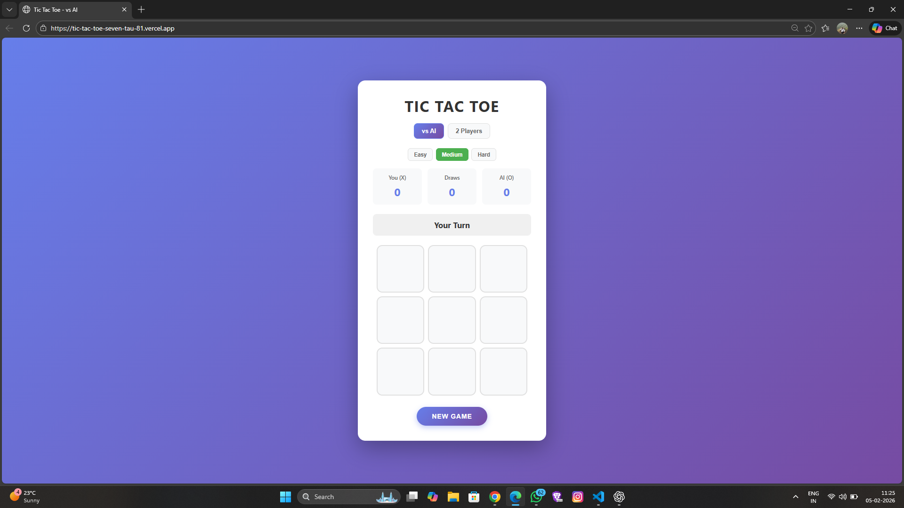

Web Developer & Designer
Hello! I'm a passionate web developer with experience in creating beautiful and functional websites. I love turning ideas into reality through code.
I’m a Full Stack Developer who builds modern, scalable web applications using current technologies and AI-assisted development tools. I enjoy turning ideas into real, working products and continuously improving my skills with new technologies.
Developed the LuckyCut frontend using AI-assisted development (MGX AI) to craft a modern, responsive motion-graphics platform. LuckyCut is designed for editing images, videos, and dynamic visual content, combining streamlined workflows and creative tools inspired by Adobe Express and Canva for fast, accessible content creation.
Built an interactive Tic Tac Toe game using HTML, CSS, and JavaScript, featuring dynamic game logic, win detection, and responsive UI design. Utilized AI assistance for minor optimization and problem-solving.
Wanna speak to me?